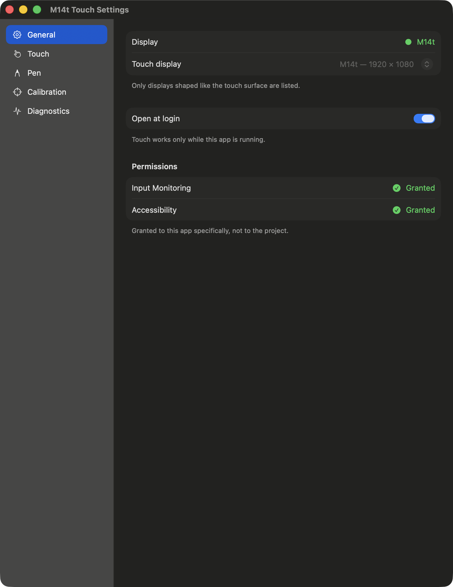
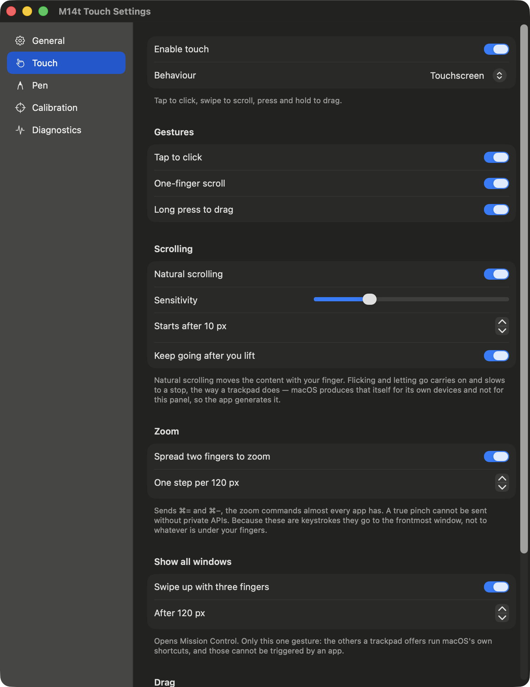
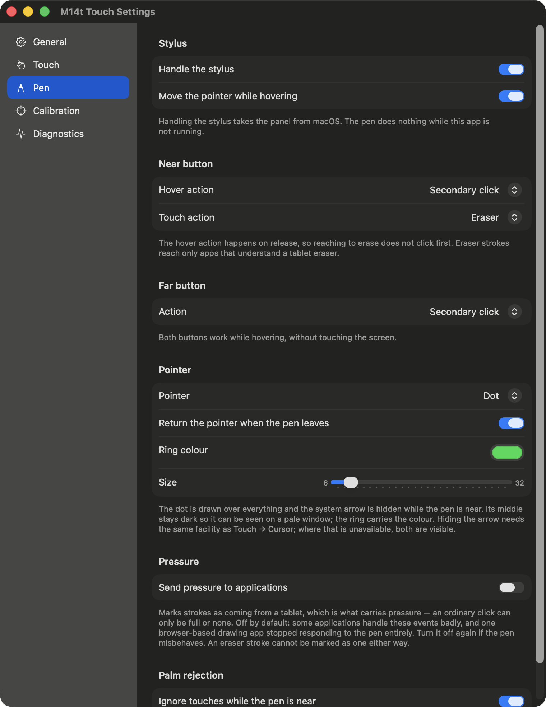
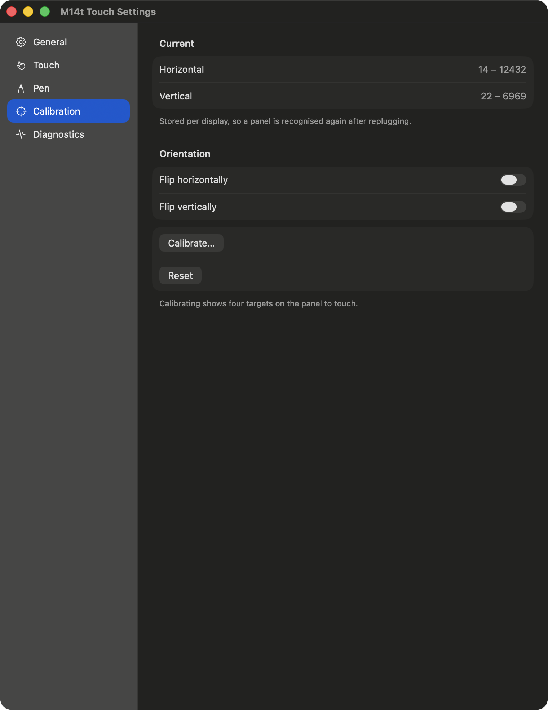
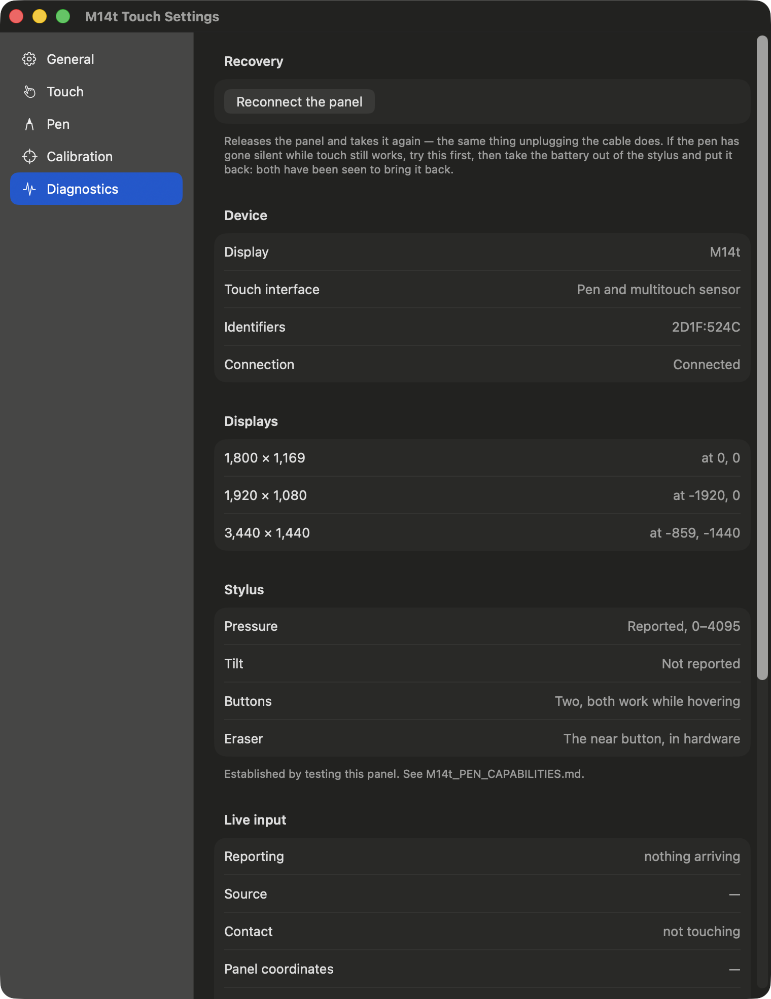

The app lives in the menu bar. Its icon is dim when nothing is being translated — a disconnected panel, touch switched off, or a permission that was not granted — and the menu says which.
General

Which display the panel is, permissions, and starting at login.
- Display
- Which screen the touches are mapped onto. Left to itself the app picks the one whose proportions match the panel, which is what you want unless you have two touch displays. The line above it says whether the panel is connected, and names what is missing when it is not.
- Permissions
- Input Monitoring lets the app read the panel; Accessibility lets it move the pointer and click. Both are required, both are granted by hand in System Settings, and macOS only applies them to a newly started process — so quit and reopen the app afterwards. The button beside each opens the right pane.
- Open at login
- Registers the app with macOS so it starts when you log in. It appears only in the installed app, and macOS may ask you to approve it under Login Items.
Touch

Finger gestures. Most of what you will use day to day.
- Behaviour
- Touchscreen is the one to use: tap to click, swipe to scroll, press and hold to drag. Mouse is the original behaviour this project started from, where a finger drags the pointer about like a trackpad. It is kept because it was the original, not because it is better.
- Tap to click, One-finger scroll, Long press to drag
- Each gesture separately. Turning one off does not disturb the others: a touch that cannot become a scroll simply stays a tap.
- Natural scrolling
- The content follows your finger, as on a phone. Off, it goes the other way.
- Sensitivity, Starts after
- How far the content moves per finger, and how far a finger must travel before a touch is treated as a scroll rather than a tap.
- Keep going after you lift
- A flick carries on and slows to a stop. macOS produces this itself for a trackpad and cannot for this panel, so the app generates it. A finger that stops before lifting stops the content too — it was placing it, not throwing it.
- Spread two fingers to zoom
- The window under your fingers comes forward, then each step of spreading sends ⌘=. Stepped rather than smooth, because a true pinch cannot be sent by any application without private APIs, and the substitute is a whole zoom level at a time. The step size is how far your fingers travel per level.
- Swipe up with three fingers
- Opens Mission Control, so you can tap the window you want. Only this one gesture: the others a trackpad offers — an application's windows, switching desktops — run macOS's own shortcuts, and those do not answer a keystroke sent by an app. They are left out rather than offered and silently doing nothing.
- Hold for (Drag)
- How long a finger must rest before a touch becomes a drag.
- Hide pointer
- The arrow is in the way on a screen you touch directly. While scrolling is the setting that works best, because the pointer is placed once and then stays still, and a pointer that moves becomes visible again whatever anyone asks. Restore afterwards puts it back where you left it when the gesture ends.
Pen

The stylus: its two buttons, its pointer, and pressure.
- Handle the stylus
- Takes the panel from macOS exclusively, which is the only way to stop the system moving the pointer relative to wherever it already was. The cost is real and worth knowing: the pen does nothing at all while this app is not running.
- Move the pointer while hovering
- Seeing where the pen is about to land is most of what hovering is for. Off, nothing moves until the tip touches.
- Near button — Hover action, Touch action
- The button closest to the tip does two different things. Pressed in the air it performs the hover action, on release, so that reaching to erase does not click on the way. Held while the tip touches, the panel reports an eraser stroke, and the touch action decides what that becomes. Eraser strokes reach only applications that understand a tablet eraser — which, on this hardware, means none of them: the event that would say which end of the pen is touching never reaches applications.
- Far button
- The button further from the tip. Both buttons work while merely hovering, so a context menu without touching the screen is possible.
- Pointer
- Dot draws a small coloured ring where the pen is and hides the system arrow, which suits direct touch. The dot's middle stays dark so it can be seen on a pale window; the ring carries the colour you choose. System arrow leaves the pointer alone.
- Return the pointer when the pen leaves
- Reaching the panel takes the pointer there, because a click carries its position. This puts it back where it was — after a pause, so that lifting the pen between strokes does not throw it across the desk and back.
- Send pressure to applications
- Marks strokes as coming from a tablet, which is what carries pressure; an ordinary click can only be full or none. Off by default, and that is a finding rather than caution: turning it on broke a browser-based drawing application, which stopped responding to the pen entirely. Turn it off again if the pen misbehaves.
- Palm rejection
- Touches that begin while the pen is near are ignored for their whole life, so a hand resting on the panel to write does not interfere. A touch already under way when the pen arrives keeps its gesture rather than being cut in half.
Calibration

Only needed if touches land somewhere other than where you touched.
- Calibrate
- Shows a full-screen target in each corner of the panel in turn; touch each one. The result is saved against that particular display, so unplugging and reconnecting it does not lose the calibration. It also works out whether the panel counts its axes backwards, so there is no checkbox to find for that.
- Flip horizontally / vertically
- For the case where calibration has not been run and the axes are the wrong way round.
- Reset
- Forgets the saved calibration and goes back to the range the panel declares about itself. Worth trying if touches were fine and then became strange.
Diagnostics

What the panel is actually doing, and what to try when it is not.
- Reconnect the panel
- Releases the panel and takes it again — the same thing unplugging the cable does. Try this first if the pen goes silent while touch still works, then take the battery out of the stylus and put it back. Both have been seen to bring it back.
- Device, Displays
- What is connected, its identifiers, and every display with its position and rotation. The numbers to quote when reporting a problem.
- Live input
- What the panel is reporting as you touch it: how many values a second are arriving, from the pen or a finger, how many contacts, the panel's own coordinates before calibration, where they land on screen, and pressure raw and scaled. Panel coordinates are the useful ones when a touch lands in the wrong place.
- Log pen actions to the system log
- Records every action the pen produces, so a problem can be read back
afterwards with
log show --last 5m --predicate 'subsystem == "com.m14ttouch.app"' --info. Switch it off when done; it is verbose, and it is not remembered between launches. - Copy report
- Puts the above on the clipboard, for pasting into a bug report.